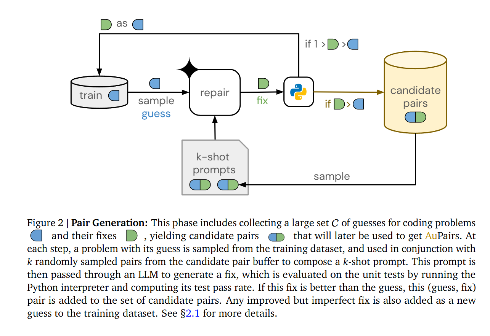
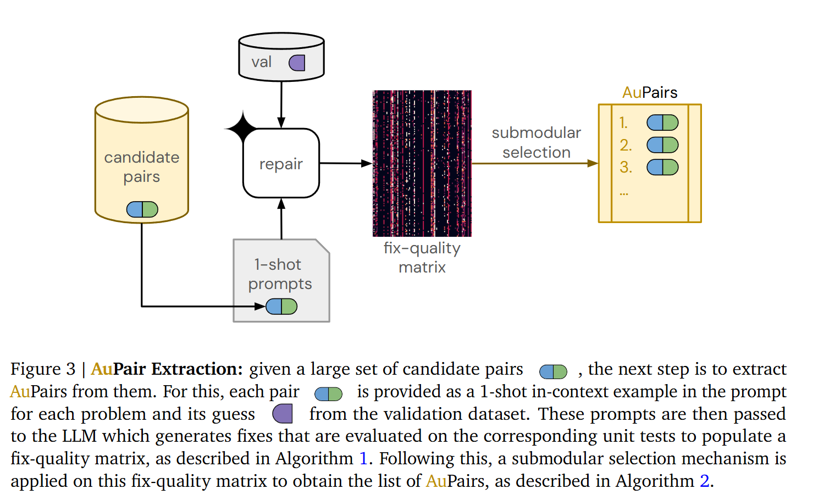
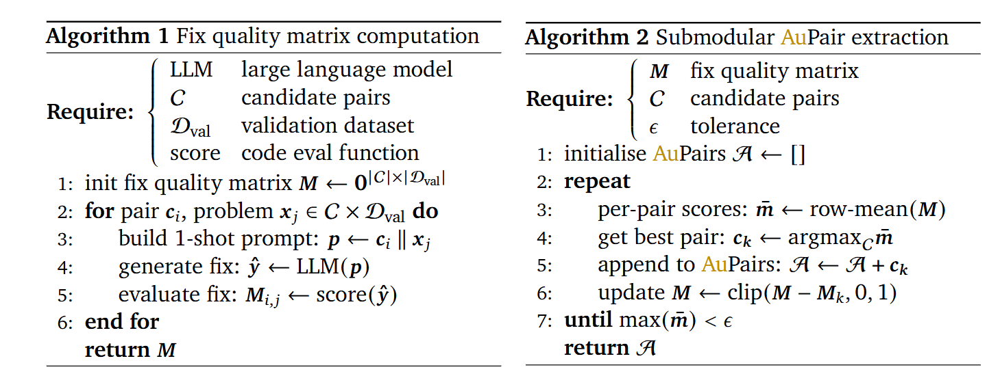
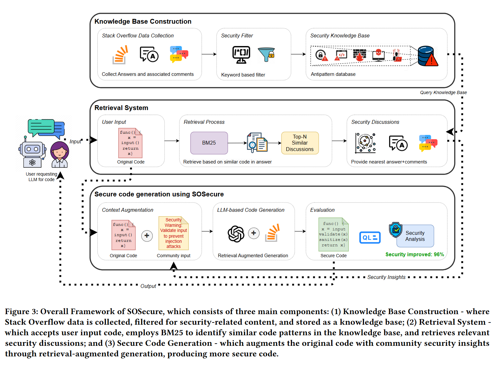
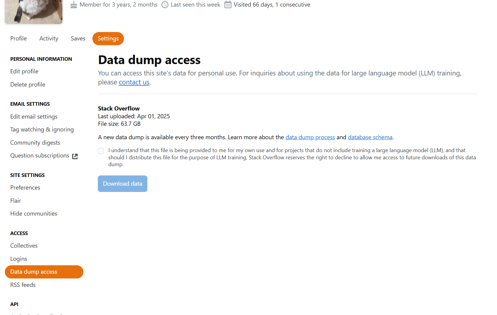
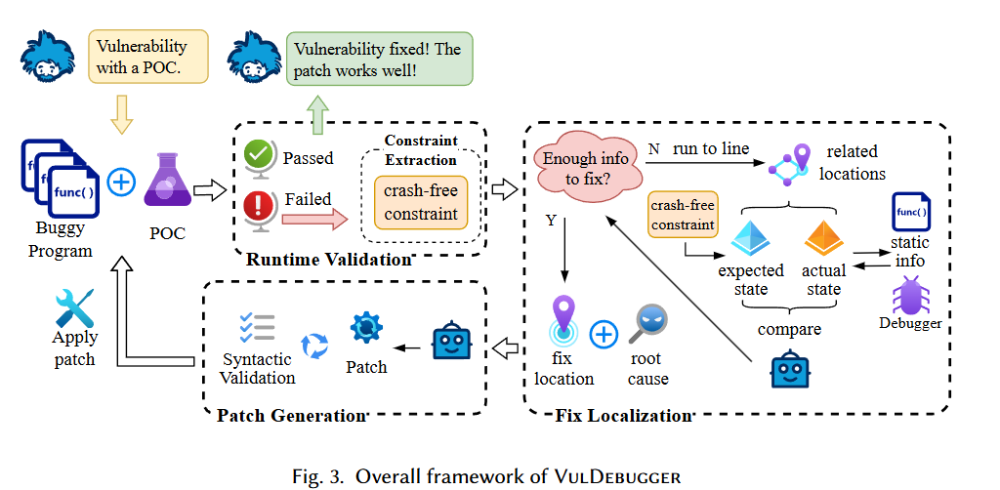

读paper20-基于LLM的缺陷修复6
读paper20-基于LLM的缺陷修复6
AuPair: Golden Example Pairs for Code Repair
https://arxiv.org/abs/2502.18487
介绍了一种从在修复代码中进行的修复对的生成方法，可以用于数据集构造，当然，修复对的生成过程也就是缺陷的修复过程。
训练集是代码及LLM生成的初始的推测（guess），该方法首先从训练集中抽取待修复代码及其guess，基于LLM进行修复，并对比修复后代码与已有修复（若有）的质量，若发现了更好的修复代码，则更新到候选对中。然后对候选修复对中的每一对，评估其修复质量，选择形成最终数据集。
候选修复对生成

从训练数据集 D 中抽取一个待修复代码及其初始guess。如果生成的修复代码在该问题的单元测试中得分高于初始guess，则该guess-fix配对将被添加到候选集 C 中。此外，如果该fix未通过所有单元测试，则为有进一步改进余地的潜在guess，因此它将作为新guess添加到训练数据集 D 中。
其中，得分是基于生成的代码在该代码测试用例的通过情况进行计算的
修复对提取

现在，我们已经有了一大组候选配对 C，下一步就是确定其中哪些能真正帮助提高性能。利用验证数据集 ，以次模块化的方式来完成这项工作。对于每一对问题组合，建立1-shot prompt，作为 LLM 的输入，由 LLM 生成给定问题的修正。然后，LLM 生成的修复程序会在单元测试中进行评估，并存储在修复质量矩阵 。

接下来，利用修复质量矩阵 ，通过以下步骤提取 AuPair： 1) 选择在 中所有问题中平均得分最高的一对 ，将其添加到 AuPairs 列表中 : 。2) 从修复质量矩阵的所有行中减去新加入的这对 AuPair 的行得分 （即 Dval 中所有问题的得分），这样可以确保该方法不会产生多余的 AuPair。更新后的矩阵 中的值被缩放到（0，1），因为矩阵中的任何负值 都意味着问题 不能通过pair 来进一步改进。如果不进行剪切，我们就无法准确估计下一步子模态提取的改进情况。3) 重复这一过程，直到改进幅度低于一定的阈值。
几个关键点
在第2步中，选取了一个得分最高的配对 ，并将其加入到最终的 AuPairs 集合中。为了避免在后续步骤中引入冗余的配对，需要从修复质量矩阵 的所有行中减去 对应的得分向量 。次模块化优化的目标是通过贪心算法逐步选择对整体增益最大的元素（配对）。减去 后，可以动态更新每个问题的剩余改进空间（即问题还可以通过其他配对改进的部分）减去 就是将 对应的贡献已经“扣除”掉，矩阵中的剩余值表示每个问题还需要通过其他配对改进的程度。，从而确保后续步骤中选择的 AuPair 具有新的增益，而不是重复已有的增益。
此外，更新后的矩阵 被剪切到 [0,1] 是为了确保矩阵中的值始终在合理的范围内，并且避免负值的干扰：
- 如果更新后的修复质量矩阵中出现了负值（即某问题的得分被“过度扣除”），这意味着该问题已经被当前选择的 AuPair 完全修复，且不需要进一步改进。因此，所有负值都被设置为 0。
- 将矩阵限制在 [0,1]内部，确保每个问题的剩余改进空间被显式表示，其中：
0表示问题已经完全修复，后续配对对它没有增益。1表示问题仍然可以被完全修复。
数据集
We use 7 datasets that contain problems and test cases from competitive programming contests: 1) CodeForces (8.8k problems), 2) AtCoder (1.3k problems), 3) HackerEarth (1.2k problems), 4) CodeChef (768 problems), 5) LiveCodeBench (400 problems), 6) CodeJam (180 problems), and 7) Aizu (2.2k problems) (Jain et al., 2024; Li et al., 2022b). We choose CodeForces and AtCoder.
提到的基本都是代码竞赛的问题集，比如：CodeForces：https://huggingface.co/datasets/open-r1/codeforces
DeepMind还开源了这个数据集，涵盖了问题、正确样例、错误样例、测试用例等：https://huggingface.co/datasets/deepmind/code_contests
SOSecure: Safer Code Generation with RAG and StackOverflow Discussions
https://arxiv.org/abs/2503.13654v1
对待修复的代码，通过RAG，在StackOverflow中检索近似问题并指导代码修复

StackOverflow的数据包每季度发布一次，在用户设置中可以找到

Agent That Debugs: Dynamic State-Guided Vulnerability Repair
https://arxiv.org/abs/2504.07634
思路是利用调试信息进行缺陷上下文补全和缺陷定位，通过测试用例的反馈情况进行patch验证

首先，运行带有 POC 的程序，触发漏洞导致崩溃，利用崩溃信息和提取的无崩溃约束，VulDebugger 构建初始prompt，并开始调试过程。在整个过程中，VulDebugger 为 LLM 提供了一套 API，用于访问程序的静态上下文并获取动态信息。在无崩溃约束的前提下，LLM 在程序的不同位置设置断点并进行调试，以获取必要的动态上下文。一旦问题得到充分分析，LLM 就会输出漏洞的根本原因和可能的修复位置。根据这些信息，VulDebugger 会再次指导 LLM 生成补丁，并通过尝试重现漏洞来验证它们。最后，不会引发崩溃的pacth将作为修复结果输出。
核心点在于充分利用了Agent的工具调用能力，使用调试工具为LLM补全信息，指导LLM进行修复。
CWE-Checker：Linux下基于二进制文件的CWE漏洞检测工具
https://github.com/fkie-cad/cwe_checker
它主要关注 Linux 和 Unix 操作系统中常见的 ELF 二进制文件。cwe_checker 使用Ghidra将二进制文件反汇编成一个通用的中间表示（IR），并在此 IR 上实现自己的分析。
可以直接使用docker运行：
1 | docker run --rm -v /PATH/TO/BINARY:/input ghcr.io/fkie-cad/cwe_checker /input |
也可以本地运行：
1 | cwe_checker BINARY |
本地运行的环境需求：
Run make all GHIDRA_PATH=/path/to/ghidra_folder (with the correct path to the local Ghidra installation inserted) to compile and install the cwe_checker. If you omit the GHIDRA_PATH argument the installer will search your file system for a local installation of Ghidra.
Sonarqube
一个用于代码质量检查的商业化平台，支持多种编程语言。它能够通过静态分析识别源代码中的多种缺陷，提供了社区版供个人使用。
使用起来比较复杂。扫描cpp代码并不是很方便，社区版支持基于maven、gradle、npm等构建的项目的扫描，导致无法扫描cpp文件，选择others进行扫描无法检索到cpp代码。
cppCheck
一个 C/C++ 代码分析工具，可进行代码静态检查。功能上也比较强大，不过主要提供misra的扫描支持。
除了正确率，也可以考虑的指标：
说实话以前我是觉得这些指标没有什么参考意义的，毕竟对于代码来说，错一个小地方就会导致整段代码无法运行，抛开正确率或者测试通过率来看指标对于实际应用毫无意义。但后来推进实验，才越发觉得这些指标对于衡量代码质量，尤其是当下正确率很难做到非常好的情况下，也是一种折中的方案。
Exact Match (EM):
EM refers to the generated patches that exactly match the fix reference. Since the correctness of code in the majority of programming languages, except for Python, is not affected by the additional whitespaces, we remove extra whitespaces when measuring EM for programming languages that are not affected.
Syntactically Correct Patch (SC):
Since some buggy programs may have more than one correct fix, in addition to EM, we define the generated patches that are syntactically equivalent to the fixed reference as syntactically correct patches by comparing their syntax tree.
CodeBLEU:
In addition to these two metrics, EM and SC, a more relaxed metric, \textit{CodeBLEU}, is included to measure the extent to which a program is repaired. Unlike the traditional BLEU score, which is a metric commonly used in NLP tasks to measure the closeness of a model-generated response to the ground truth text, CodeBLEU more accurately measures the similarity between generated patches and reference fixes by taking both syntax and semantics of programs into account.
A CodeBLEU score is often calculated as: CodeBLEU=α⋅BLEU+β⋅BLEUweight+γ⋅Matchast+δ⋅Matchdf, where BLEU is calculated by standard n-gram BLEU and BLEUweight is the weighted n-gram match, obtained by comparing the generated patch tokens and the fix reference tokens with different weights. Matchast and Matchdf the syntactic AST match and the semantic dataflow match, representing the syntactic information of code and the semantic similarity between the generated patch tokens and the fix reference tokens, respectively.
In our work, we choose BLEU-4 (i.e.n=4) as standard BLEU and set 0.2, 0.2, 0.3, 0.3 as the values of α,β,γ,δ respectively to emphasize the importance of syntax and semantics of programs.